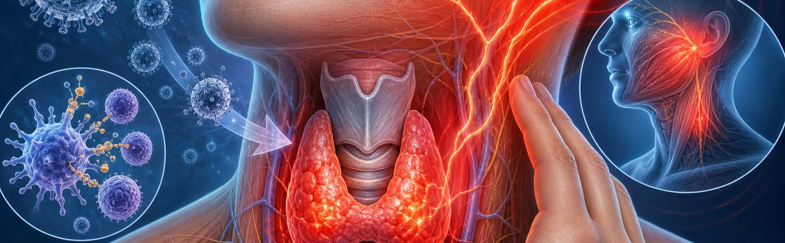

아급성 갑상선염,
이해하고 끝까지 치료하기
바이러스 감염 후 갑상선에 생기는 통증성 염증 — 4단계 자연경과와 단계별 치료법을 알아봅니다
아급성 갑상선염 (Subacute Thyroiditis, de Quervain's)
바이러스 감염 후 2~8주 뒤 발생하는 자기 한정적 갑상선 염증 — 성인 갑상선 통증의 가장 흔한 원인
왜 생길까요? — 바이러스 감염이 방아쇠
바이러스가 직접 갑상선을 공격하거나, 면역 반응이 과도하게 활성화되어 갑상선 세포가 파괴됩니다
감기 등 바이러스 감염 후 2~8주 뒤에 갑상선에 통증과 염증이 시작됩니다.
콕사키 바이러스(Coxsackie), 아데노바이러스, 볼거리 바이러스(mumps), EBV, 코로나19 등 다양한 바이러스가 원인이 됩니다. 바이러스가 갑상선 여포 세포를 직접 손상시키거나, 면역 반응이 과도하게 활성화되어 여포가 파괴됩니다. 파괴된 세포에서 저장돼 있던 갑상선 호르몬이 한꺼번에 혈중으로 유출되면서 갑상선중독 증상이 나타납니다.

주요 증상 — 4가지 핵심 신호
환자의 96%가 경부 통증을 경험하며, 약 50%에서 갑상선중독 증상이 동반됩니다
자연경과 — 4단계 패턴
대부분 6~18개월에 걸쳐 단계적으로 회복됩니다 (Hyperthyroid → Euthyroid → Hypothyroid → Recovery)
진단은 어떻게 하나요?
혈액검사(ESR/CRP·갑상선 기능)와 영상검사(초음파·RAIU)를 종합하여 진단합니다
비슷한 질환과 어떻게 구별하나요?
통증 유무·ESR/CRP·RAIU 섭취율이 그레이브스병/하시모토 갑상선염과의 핵심 감별점입니다
- 심한 경부 통증 (96%) — 핵심 단서
- ESR/CRP 현저히 상승
- TRAb 음성 · Anti-TPO 음성
- RAIU 매우 낮음 (< 5%)
- 초음파 혈류 감소
- 치료 — NSAIDs / 스테로이드
- 통증 없음 (Graves'·Hashimoto 모두)
- ESR/CRP 정상
- Graves' — TRAb 양성 (~95%)
- Graves' — RAIU 높음 (> 35%)
- 초음파 혈류 — Graves'에서 현저히 증가
- 치료 — 항갑상선제(MMI) 또는 경과 관찰
치료 1단계 — NSAIDs와 베타차단제
경증~중등도는 NSAIDs로 통증을, 베타차단제로 빈맥·손떨림 등 갑상선중독 증상을 조절합니다
치료 2단계 — 스테로이드 감량 프로토콜
NSAIDs 효과 부족 시 프레드니솔론 사용 — 천천히 줄여야 재발(약 12%)을 예방할 수 있습니다
반드시 즉시 알려야 할 위험 신호
치료 중 다음 증상이 나타나면 처방을 임의로 조절하지 말고 바로 진료를 받으세요
오늘 꼭 기억할 핵심 8가지
대부분 완전히 회복됩니다 — 꾸준한 복약·경과 관찰이 회복의 핵심입니다
함께 치료하면
반드시 회복됩니다
궁금한 점이 있으시면 언제든지 상담해 주세요 — 정기 검사로 끝까지 함께하겠습니다
광교중앙로 298, 4층
토요일 08:30~13:30
같은 자료를 다시 볼 수 있어요